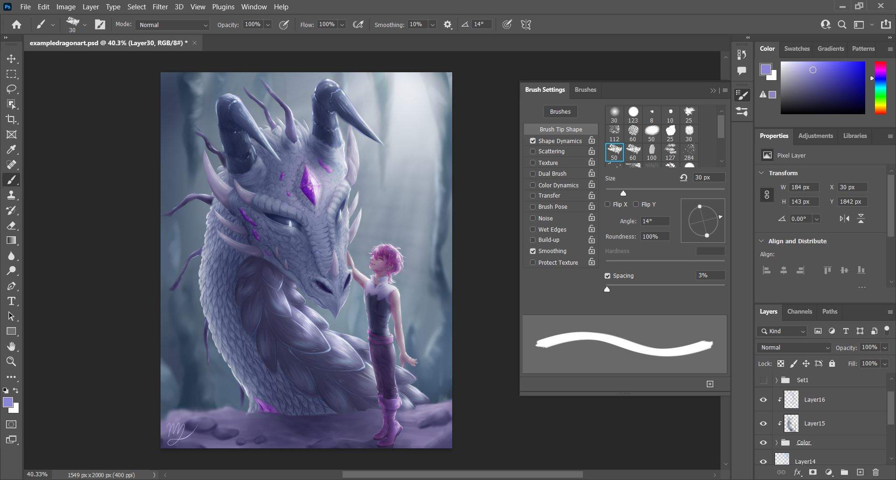
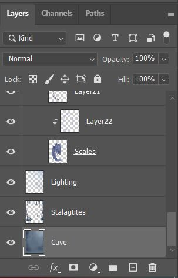

Anyone can create digital art as long as they have an art program at their disposal!
There are several different programs to choose from. Whether it be from Adobe Photoshop, Clip Studio Paint, or Paint Tool SAI, they give similar tools to use when creating art. Photoshop is one of the most commonly used program for both drawing and design in the industry, so you'll find that a lot of people use it.
Different programs will have different layouts, so it's important to focus on learning mainly one as to not confuse yourself.People typically choose programs based on their needs, as while they might be similar, they still hold their key differences.
From there, most digital artists use a drawing tablet to fully take advantage of the tools at their disposal. Almost all art programs have tablet compatibility, so this is what allows artists to draw more professionally.
Naturally, one of the most used and appreciated feature of professional art programs would be layers.
With these, artists are able to effectively create different parts of a design that they are able to manipulate individually. Adding or taking away from one specific layer doesn't impact anything on the other layers. This allows digital artists to fix mistakes much more easily than if it was something done traditionally.
All of this comes together to make whole digital art pieces, just like the one first pictured!